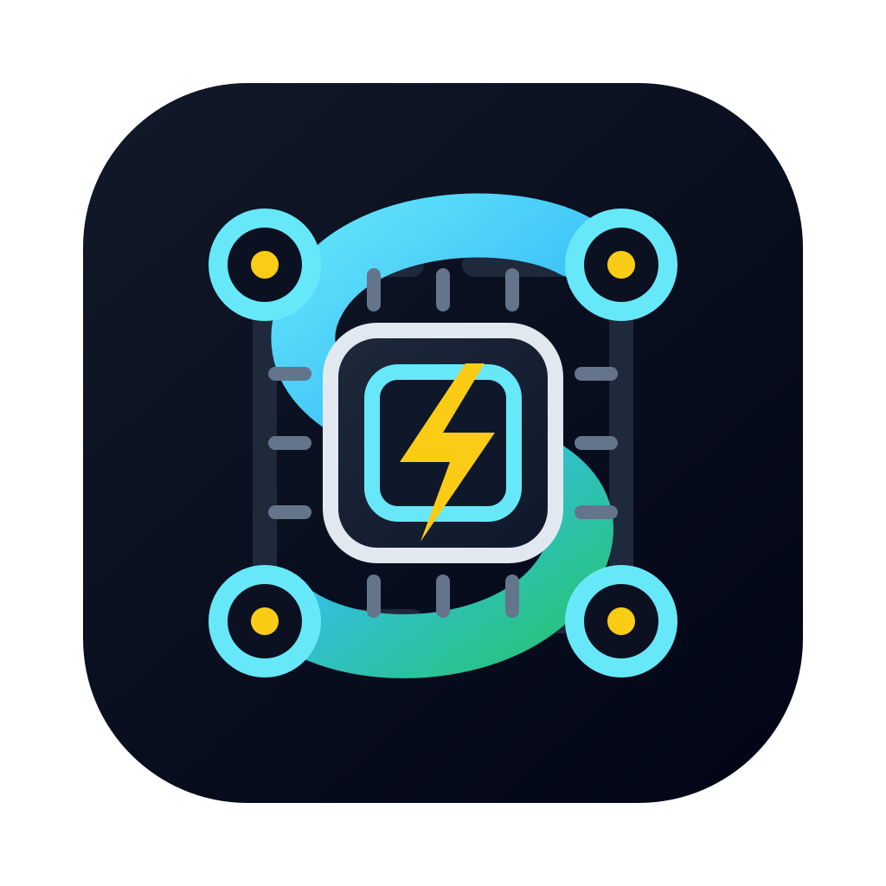

Before you submit
Partition and GPU suggestions come from your cluster, sorted by how busy each partition is. Ask for a GPU type a partition doesn’t have and the line is flagged before sbatch ever sees it.

SLURM Cluster ManagerLess squeue, more science.
Monitor your jobs, find free GPUs, and open logs in a click.
A whole session in under two minutes: check the cluster, write a training script with the partition and GPUs suggested, submit it, queue an evaluation behind it, and read the logs.
Partition and GPU suggestions come from your cluster, sorted by how busy each partition is. Ask for a GPU type a partition doesn’t have and the line is flagged before sbatch ever sees it.
Pending jobs say why they’re waiting and, when Slurm has a guess, when they’ll start. Running ones show how much of their time limit they’ve used.
Open stdout and stderr in the editor, side by side if you want both. After it finishes, Job History shows its exit code and peak memory, with links to the logs.
Use Remote – SSH to open a window on a login node, or any host where squeue works, then open your project folder.
In the Extensions view, find SLURM Cluster Manager and choose Install in SSH: host. It runs in the remote extension host and calls Slurm from there.
Open a script with #SBATCH directives, save it, and click Submit to SLURM (▶) in the editor title bar. The job appears under Active Jobs in the SLURM Cluster sidebar.
Or run this in Quick Open (Ctrl/⌘ + P) from the remote window:
ext install DhimitriosDuka.slurm-cluster-manager
Questions
VS Code 1.85 or newer, or any fork of it, like Cursor, Windsurf, or VSCodium. Slurm’s commands have to work where the extension runs, which with Remote – SSH means the cluster.
It reads with squeue, sinfo, scontrol, and sacct. Anything that changes a job, like sbatch or scancel, runs only when you click the action. Fair share and priority also need sshare and sprio, and the GPU views need GPUs set up as Slurm GRES.
Very little. Jobs are fetched when a view opens, after you act on a job, or when you press refresh. Auto-refresh is off unless you turn it on.
Partition data is fetched every few minutes and shared by every view and suggestion. Scheduled refreshes pause while VS Code is in the background, and you can change or turn off the intervals in settings.
Not yet. Running the extension locally and connecting to a remote Slurm cluster over SSH is a work in progress and will be included in a future release.
Until then, install it on the cluster through Remote – SSH, as described in Getting started.